| Name | Province | ClimateID | Latitude | Longitude |
|---|---|---|---|---|
| ACTIVE PASS | BC | 1010066 | 48.87 | -123.28 |
| ALBERT HEAD | BC | 1010235 | 48.40 | -123.48 |
| BAMBERTON OCEAN CEMENT | BC | 1010595 | 48.58 | -123.52 |
| BEAR CREEK | BC | 1010720 | 48.50 | -124.00 |
| BEAVER LAKE | BC | 1010774 | 48.50 | -123.35 |
| BECHER BAY | BC | 1010780 | 48.33 | -123.63 |
| BRENTWOOD BAY 2 | BC | 1010960 | 48.60 | -123.47 |
| BRENTWOOD CLARKE ROAD | BC | 1010961 | 48.57 | -123.45 |
Vector Data Model
A more complex, but light weight format best suited for discrete objects.
Vector Data Model
Represents space discretely:
- Objects delineated using sets of coordinate pairs.
- Linked to descriptive attributes
- Many attributes per object
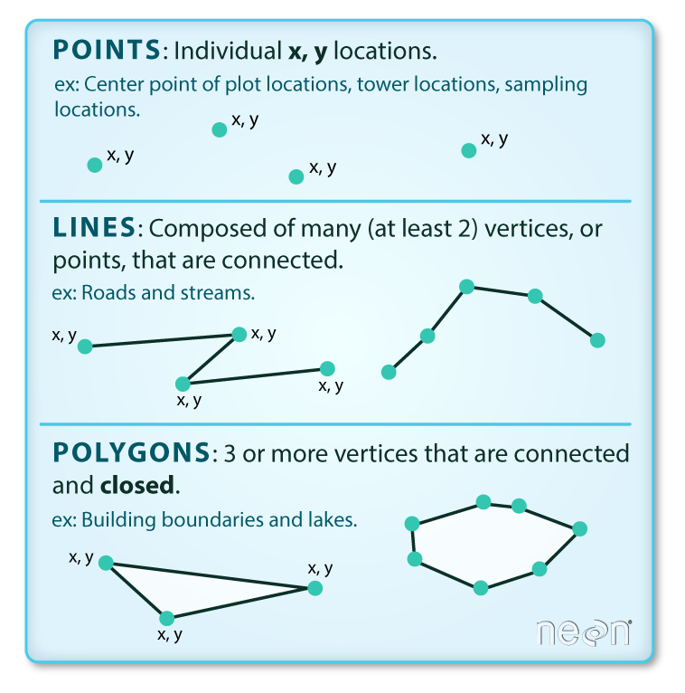
Points
A point feature is an individual x, y coordinate pair representing a precise location.
- “Zero-dimensional”
- No length, width, or area
Points
Points are great for representing a variety of objects, depending on the scale:
Almost Any Scale
- Trees
- Stop signs
- Fire hydrants
Points
Points are great for representing a variety of objects, depending on the scale:
Smaller Scales
- Cities
- Wild Fires
- Airports
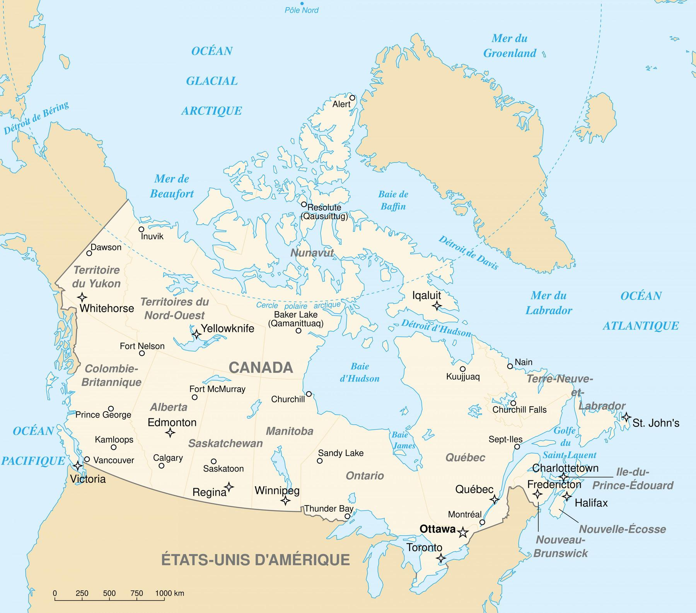
Lines
A line feature is a set of connected points. Must have a start and end point. May have middle points (vertices).
- One-dimensional
- Length
- No width or area
Lines
Lines are also great for representing a variety of objects, depending on the scale:
Almost Any Scale
- Hiking trails
- Power lines
- Water pipes
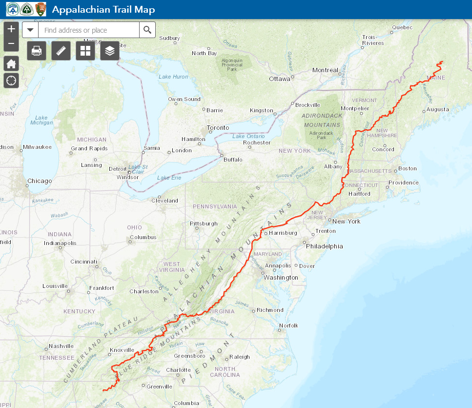
Lines
Lines are also great for representing a variety of objects, depending on the scale:
Smaller Scales
- Roads
- Rivers
- Storm tracks
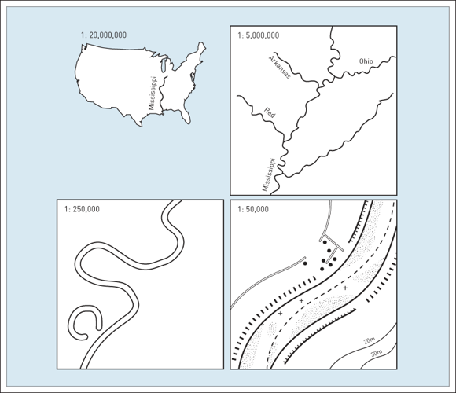
Polygons
A polygon feature consist of a set of three or more vertices connected by line segments (edges) that form an enclosed shape.
- Two-dimensional
- Length & width
- Area
Polygons
Preferred for many objects depending on scale:
Almost Any Scale
- Climate units
- Lakes
- Political boundaries

Polygons
Preferred for many objects depending on scale:
Larger Scales
- Buildings
- Roads
- Cities
Interior Rings
All polygons are an enclosed shape. Some can also have interior rings (holes).
- Each ring is a separate set of vertices and edges within the polygon
- Interior rings cannot overlap
TopHat Question 1
The vector data model can represent objects as: (select all that apply)
- Points
- Lines
- Polygons
- Surfaces
Multi-part Objects
When an object has multiple parts, the vector model allows for:
- Multi-polygons
- Multi-lines
- Multi-points
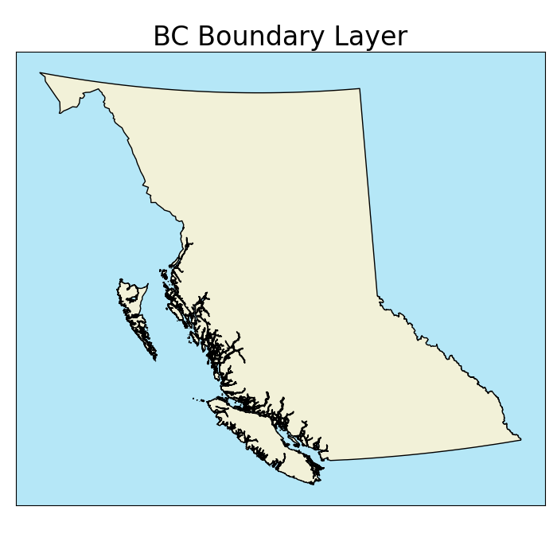
Resolution
Data resolution also applies to the vector model:
- Less straightforward than for raster model
- Spacing between vertices
- Smallest resolvable feature
- Higher resolution = larger file size
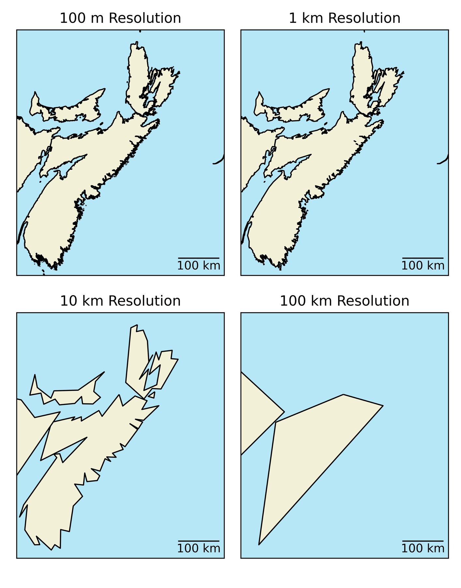
TopHat Question 2
The resolution of a vector layer is defined by
- The cell size
- The spacing between vertices
- The point size
- The number of attributes
Attribute Tables
Non-spatial data is stored separate from spatial data.
- Linked by an index
- A unique identifier
- No two objects can have the same index
- Often labelled as the “FID” in Arc
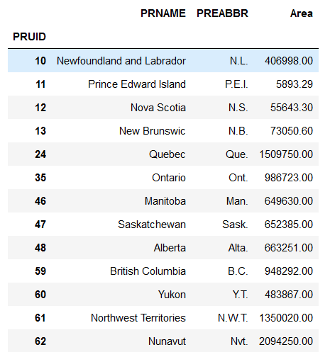
Attribute Tables
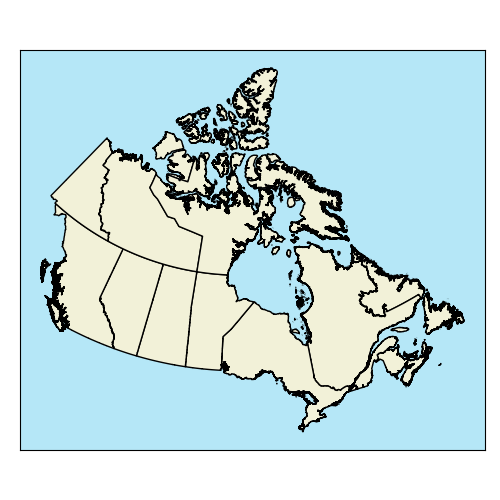
Attribute Tables
Non-spatial data is stored separate from spatial data.
- Ability to store many attributes
- Less redundancy than raster model
- Easy to add new attributes
TopHat Question 3
In the vector data model, each object can only have one attribute. We must stack objects if we need multiple attributes.
- True
- False
Loss of Variability
Similar to the mixed pixel problem, feature is treated as homogenous
- What a unit covers multiple values?
- Any variability is lost and the unit is treated as homogenous
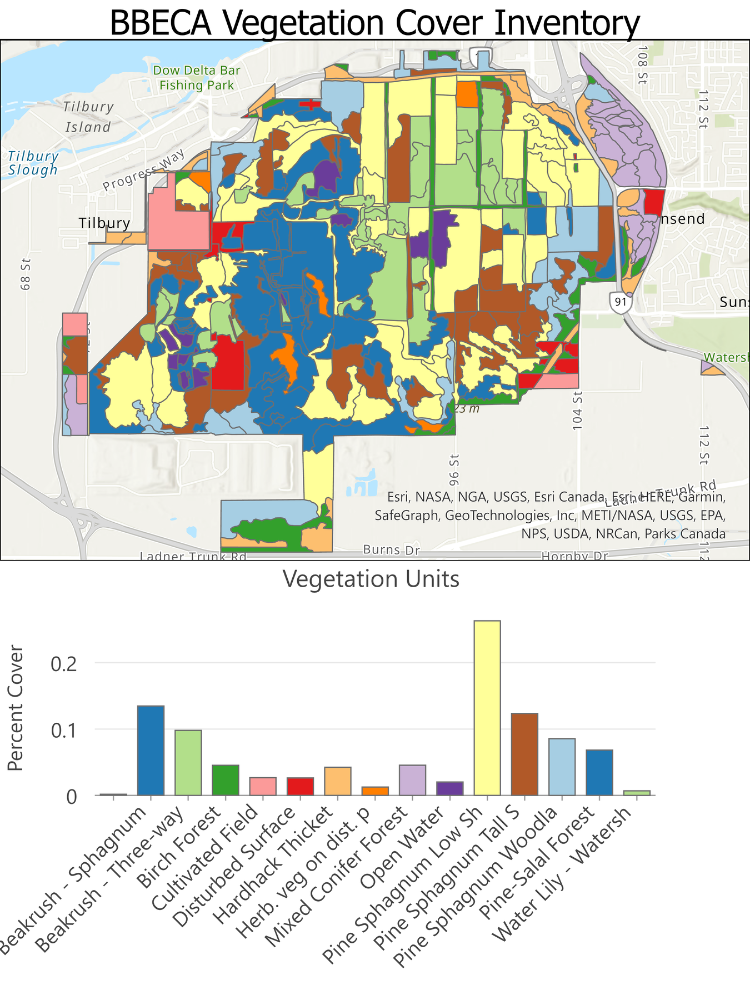
Vector Overlay
More computationally expensive than raster overlay.
- Calculate the relative positions of ever vertex in every layer
- Determine overlap, containment, etc.
- Many operations depending task
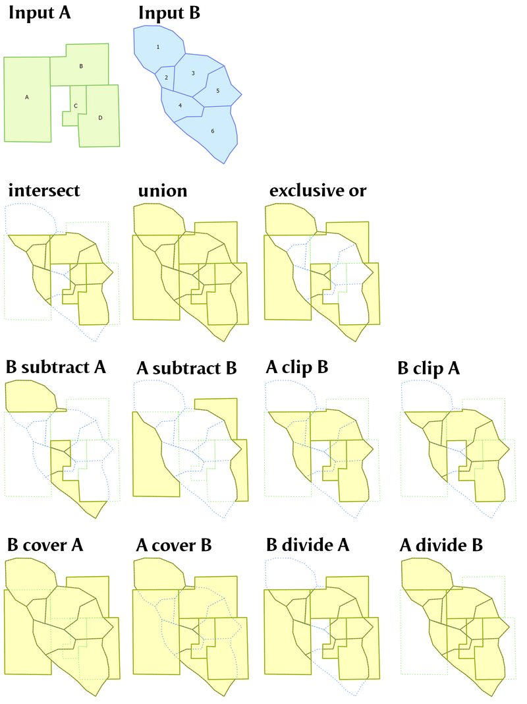
Field Calculator
- Fields can be “variables” in linear equations
- Won’t update if field values change
- Not always intuitive
- Can’t calculate the sum of a column without extra steps
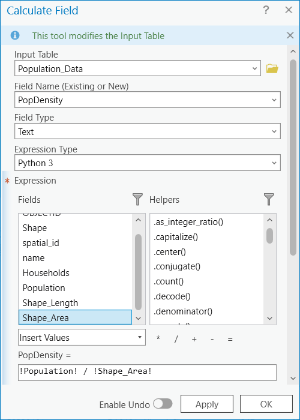
Field Calculator
- Fields can be “variables” in linear equations
- Won’t update if field values change
- Not always intuitive
- Can’t calculate the sum of a column without extra steps
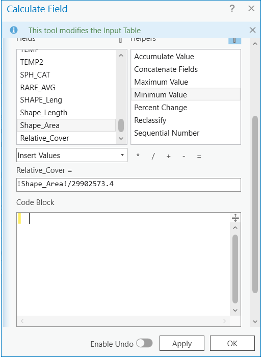
Topology
The spatial relationships between geographic features.
- Important for route finding
- Google maps uses topology for directions
- Rules by feature
- Pedestrian
- Car
- Transit
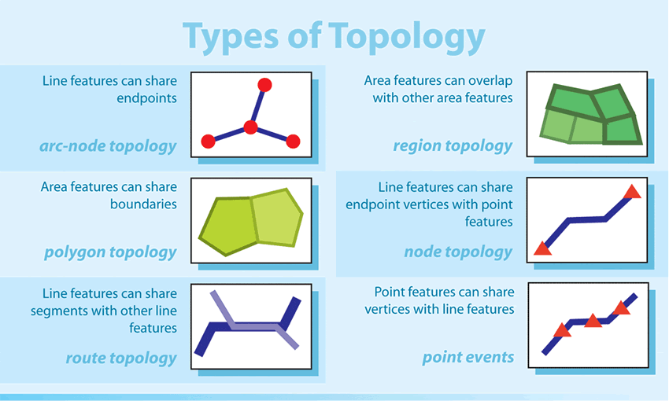
Topology
The spatial relationships between geographic features.
- We can set rules e.g.:
- Polygons (i.e. buildings) cannot overlap
- Points (i.e. fire hydrants) must be attached to lines (i.e. water mains)
Key Advantages
The vector data model is well suited for discrete objects:
- The compact data structure allows for smaller file sizes relative to the raster dta model
- Easy to query and select by attributes
- Topology > Proximity & Network Analysis
- Graphic output is usually “cleaner”
- For final production maps, often useful to convert to vector format
TopHat Question 4
This term describes the spatial relationships between features:
- Topology
- Resolution
- Vertex
- Attributes
- Vector
Shapefiles
One of the most common file types you will encounter, stores the coordinates of vertices plus metadata. Identified by a .shp tag.
Object type: points/multi-points, lines/multi-lines, or polygons/multi-polygons.
Only one type per .shp!
Coordinate reference system (CRS).
Attribute table.
GeoJSON
A simple, lightweight format for most commonly encountered in web mapping. Identified by a .json tag.
- Unlike shapefiles, a GeoJSON can mix of geometries.
- Encoded stylistic choices in the file.
- Larger File Size
- An Example)
Text Data
TopHat Question 5
The Vector data model is almost always a better choice than the raster data model because:
- It represents objects discretely
- It has better resolution for a given file size
- We can store many attributes for one object without creating redundancy
- The vector data model is not always better than the raster data model